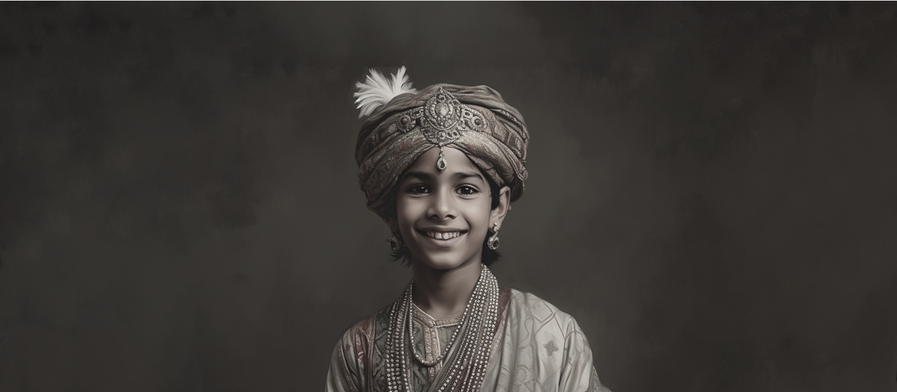

The story begins 150 years ago in the majestic Rajastan Desert where a family Lagacy
was formed in the depths of history.The Bawri family's male heirs were esteemed treasures
to the maharajas of patiala.
The family was revered for generations as their flourishing fortunes were interwined with
that of the royal court
Mahendra Singh was crowned the 6th Maharaja of Patiala at the tender age of ten.
Therefore the kingdom was run by a council until the Maharaja came of age.
Unfortunately, the council perceived Treasurer Bawri's loyalty to
the Maharaja as a threat to them. So the council forced him to resign in 1868.

Mahendra Singh was crowned the 6th Maharaja of Patiala at the tender age of ten.
Therefore the kingdom was run by a council until the Maharaja came of age.
Unfortunately, the council perceived Treasurer Bawri's
loyalty to the Maharaja as a threat to them. So the council forced him to resign in 1868.
Along with a few courageous travellers,
HB embarked on a treacherous 2500-kilometer journey to seek fortunes in distant lands.
The six-month journey on foot was fraught with dangers like wild lions, robbers, inclement weather,
sickness, and starvation. To this day, HB's feat is unparalleled for a thirteen-year-old.